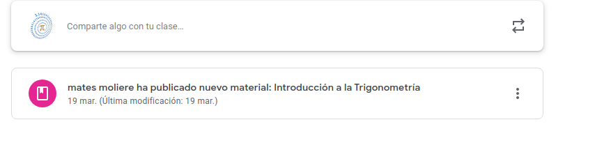
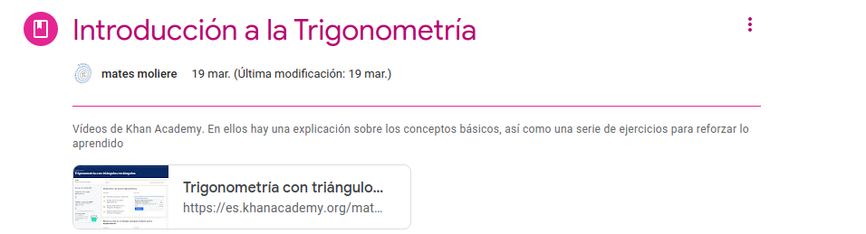
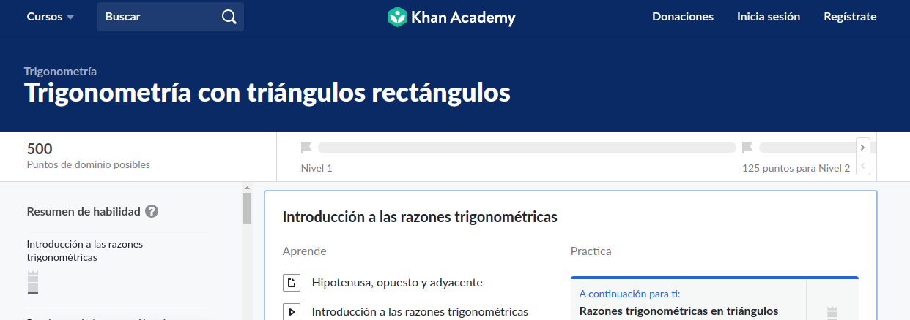

A partir de hoy lunes 23 de marzo pasaremos las clases a Google Classroom. Para entrar en Google Classroom pincháis aquí
 Entraremos con nuestra cuenta de Google. Allí os apuntáis a una clase. Se os pedirá un código que es: y6iltgl
Entraremos con nuestra cuenta de Google. Allí os apuntáis a una clase. Se os pedirá un código que es: y6iltgl


Una vez dentro de la clase os váis al tablón

Pincháis en ese enlace que os llevará a esta página:

Volvéis a pinchar en el enlace que aparece. Éste os llevará a la página de Khan Academy donde volveréis a
registraros con vuestra cuenta de Google para iniciar la lección. Esto es muy importante porque de esa forma yo
puedo seguir vuestro progreso. Durante el proceso os encontraréis con vídeos que os explican los conceptos, así
como actividades que debéis completar. Usaremos el Tablón de Anuncios para preguntar las dudas que tengáis. Las
dudas las apuntáis primero en papel y cuando tengáis claro lo que queráis preguntar lo hacéis en una sola
publicación.
 -->